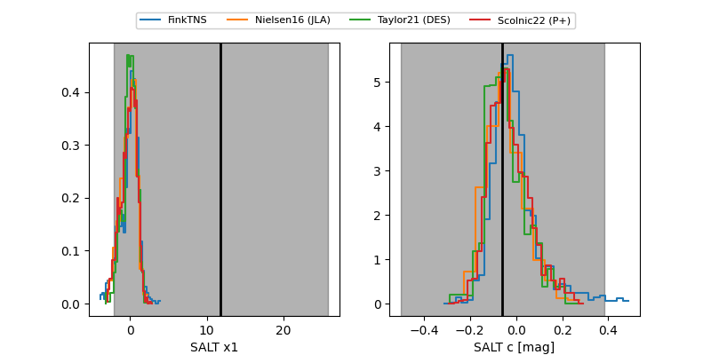

FINK: ZTF25abqobuy
Lasair: ZTF25abqobuy
ALeRCE: ZTF25abqobuy
ZTF25abqobuy (ztf,fink)
equatorial (ra, dec) = (28.5462,-3.52553)
galactic (l, b) = (158.0697,-62.03796)

last ztfg=20.03, ztfr=20.17
1 ztfg, 2 ztfr detections